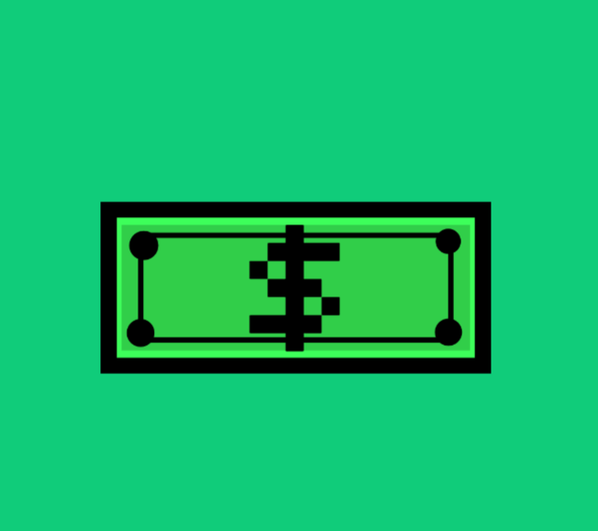
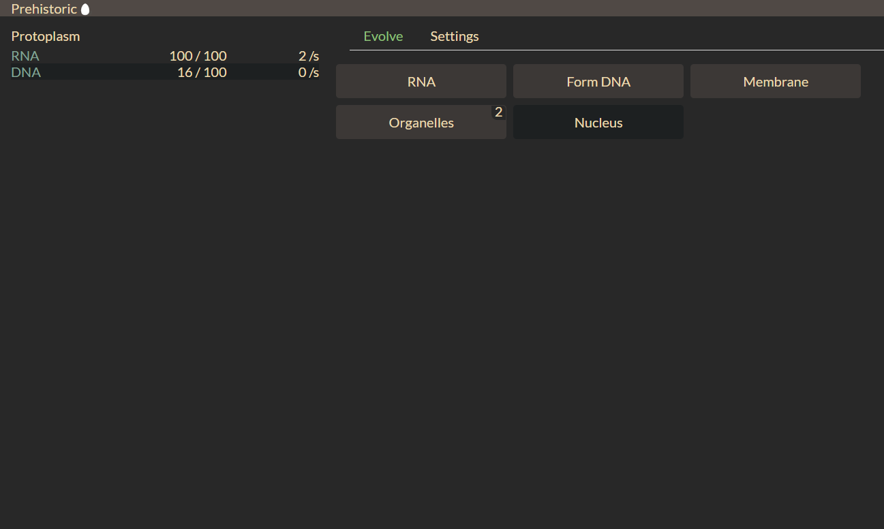
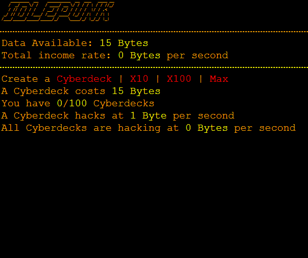
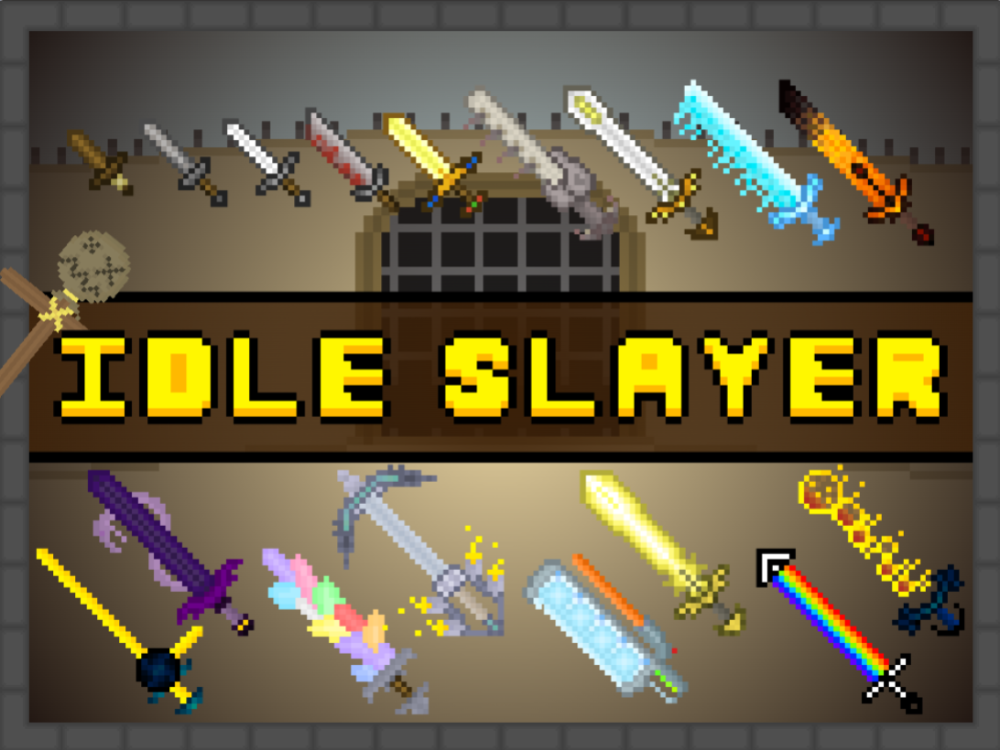
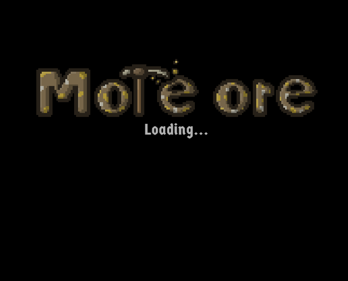
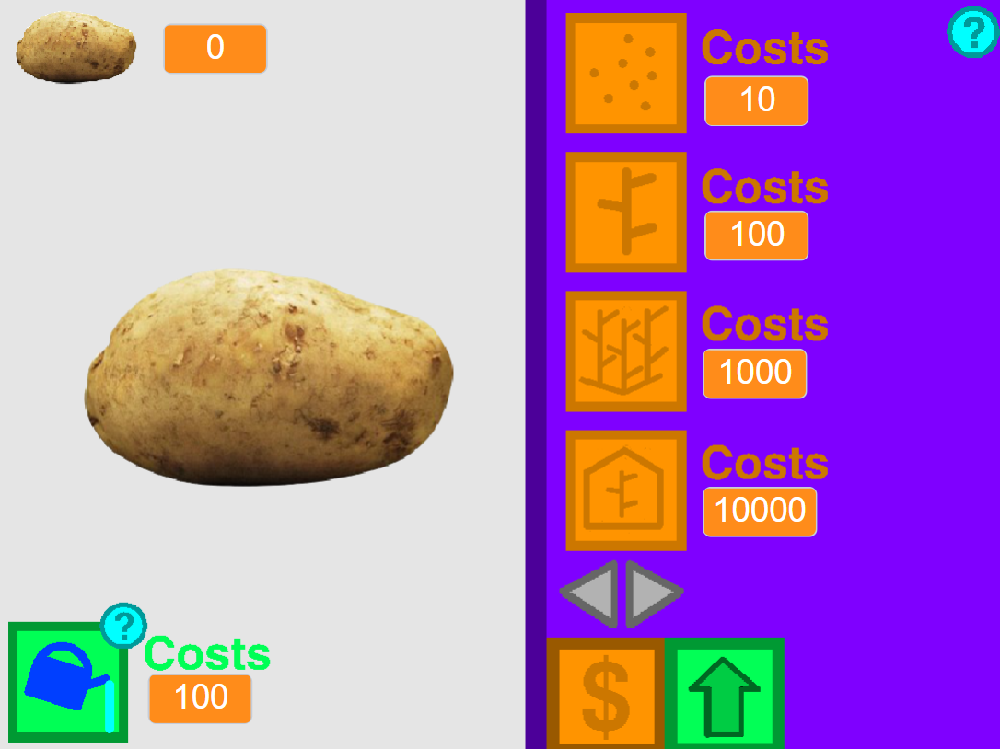
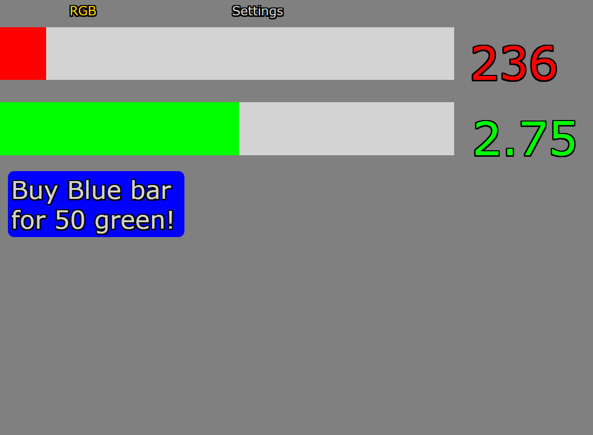

Idel Games
Click, Relax, Thrive: Idle Games, where simplicity sparks endless adventures.
ENTER
Dive into the realm of idle games where simplicity meets addictive gameplay, and every click drives your journey forward. In these captivating adventures, players embark on incremental quests, accumulating resources, and unlocking upgrades to enhance their progress. Whether you're baking cookies, managing a virtual empire, or exploring fantastical realms, idle games offer a perfect blend of relaxation and excitement, where every decision shapes your path to success.
| ID | Image (press image to play) | Game Name | Description | Orginal Game maker | Website host location |
|---|---|---|---|---|---|
| SID1 |

|
100% A clicker game | 100% A clicker game - This clicker game offers a simple yet addictive experience where players aim to reach 100% completion. With straightforward mechanics, users incessantly click to progress through various levels, making it an engaging challenge. | Xiko | scratch |
| SID11 |  | Grind craft | "Grindcraft" is a captivating incremental/idle game developed by Jetspice Games. In this addictive gaming experience, players embark on a journey to build and expand their own civilization from humble beginnings. The game's blocky world is teeming with resources like wood, stone, and food, waiting to be gathered and utilized for crafting and construction. Through a combination of resource management, crafting, and exploration, players unlock and upgrade various structures, tools, and technologies to enhance their civilization's capabilities. Along the way, they encounter familiar characters, landmarks, and inventions, adding an extra layer of charm and nostalgia to the experience. With its simple yet addictive gameplay mechanics, charming visuals, and endless opportunities for expansion and discovery, "Grindcraft" offers hours of entertainment for players of all ages. | Jetspice Games | classroom6x |
| SID2 | Cash tycoon | Cash tycoon - Embark on a capitalist adventure in this tycoon game where players build their financial empire from scratch. With strategic decision-making and resource management, users aim to amass wealth and expand their business portfolio to become the ultimate tycoon. | -FrogAnimations- | scratch | |
| SID3 |

|
Cookie clicker | Cookie clicker - Dive into the delicious world of cookies in this addictive idle game where players bake cookies to earn currency and unlock upgrades. With its charming visuals and incremental gameplay, Cookie Clicker provides endless entertainment for cookie enthusiasts. | Orteil | Github |
| SID4 |  | Evolve | Evolve - Experience the journey of evolution in this captivating idle game, where players guide organisms through various evolutionary stages. With each evolution, users unlock new abilities and traits, shaping the destiny of their species and adapting to ever-changing environments. | pmotschmann | github |
| SID5 |  | Idle punk | Idle punk - Set in a punk-inspired universe, this idle game offers a unique twist on the genre, allowing players to manage their own punk band. From booking gigs to upgrading equipment, users navigate the music industry to achieve fame and success in this rebellious adventure. | unknown | Github |
| SID6 |  | Idle slayer | Idle slayer - Enter a fantasy realm filled with monsters and challenges in this idle RPG game where players take on the role of a mighty slayer. With automated combat and character progression, users embark on epic quests to defeat powerful foes and save the world from darkness. | Animi987 | scratch |
| SID7 |  | More Ore | More Ore - Delve into the depths of the earth in this mining-themed idle game, where players gather resources to expand their mining operation. With upgrades and automation, users strive to unearth rare ores and unlock secrets hidden beneath the surface. | isyn | Github |
| SID8 |  | Potato Clicker | Potato clicker - Experience the thrill of potato farming in this whimsical clicker game where players cultivate fields and harvest potatoes for profit. With its charming pixel art and addictive gameplay, Potato Clicker offers a relaxing yet rewarding farming experience. | PureScratching | scratch |
| SID9 |  | RGB | RGB - Immerse yourself in a vibrant world of color in this idle game where players mix and match RGB colors to create stunning combinations. With its simple yet engaging mechanics, users experiment with different hues to unlock new possibilities and artistic expressions. | ikerstreamer | Github |
| SID10 |

|
Spice Idle | Spice Idle - Embark on a flavorful journey in this spice-themed idle game, where players cultivate exotic spices and trade them for profit. With its immersive world and strategic gameplay, users establish spice empires and dominate the market in this aromatic adventure. | zakuro98 | Github |